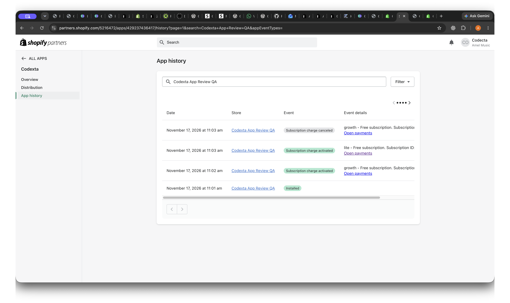
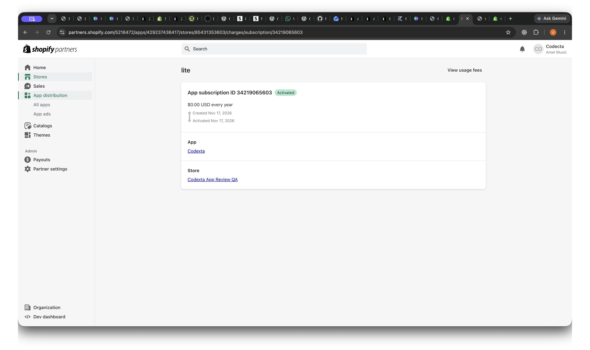

Codexta
Codexta Finding 2 · Shopify billing and subscription approval
Shopify recorded the plan activations.
Shopify Partners app history records successful Growth and Lite subscription activations on the QA development store, followed by cancellation of the Growth subscription when the store switched to Lite.
Shopify Partner history · QA dev store · 17 Nov 2026
Subscription event history
The event log shows both activations and the canceled Growth subscription. The records are Shopify Partner test events; they do not represent a paid production charge.

Lite subscription detail
Shopify shows the Lite subscription as successfully activated at $0.00 USD per year on this development store.
